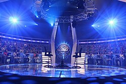

¿QUIEN QUIERE SER MILLONARIO?
¿QUIEN QUIERE SER MILLONARIO?
DESCRIPCION Y ORIGEN

Quien quiere ser millonario es el famoso juego de saberes mas conocido a nivel mundial
la cual se ha convertido tambien en un famoso programa de television.
El programa se originó en el Reino Unido en 1998, en donde era presentado por Chris Tarrant.
Se basa en un formato ideado por David Briggs, Steven Knight, y Mike Whitehill, quienes crearon una serie de juegos promocionales para un programa matinal presentado por Tarrant.
El título original para el programa inicialmente era Cash Mountain (Montaña de dinero). El programa toma su título actual de una canción con el mismo título, compuesta por Cole Porter.
EN VENEZUELA
Transmitido inicialmente por RCTV y presentado por el presidente de la empresa, el conductor Eladio Lárez, quien ha sido galardonado con múltiples premios gracias a su participación.
Es considerado el primer programa de esta franquicia en realizarse en un país latinoamericano.
Se transmitió desde el 23 de agosto de 2000 hasta el 23 de mayo de 2007, cuatro días antes de que el gobierno del Presidente Hugo Chávez, decidiera no renovar la concesión para transmitir en señal abierta a RCTV.
En 2011, RCTV anunció que volvería a producir el programa y que el mismo sería transmitido por el canal Televen. En efecto, la siguiente temporada del programa de concursos se inició el día 8 de mayo de 2011, pasando del horario de los miércoles a las 8pm, al horario de los domingos a las 9 p. m.